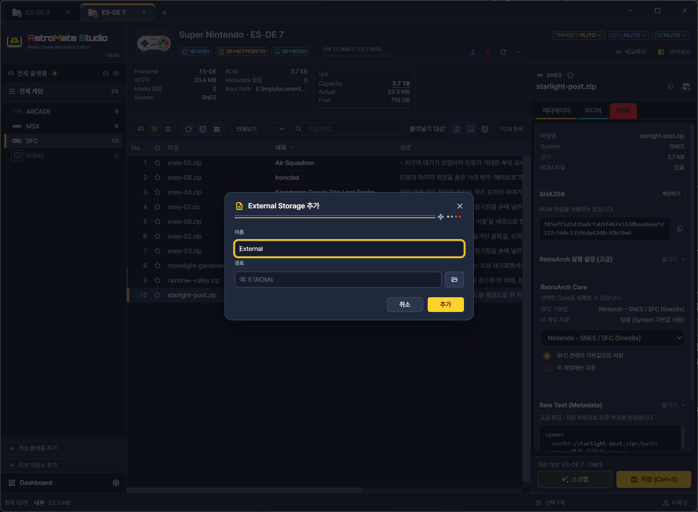

사용 설명서 › 보관·정리
외부 드라이브와 시스템 경로
한 컬렉션(Collection) 안에서 내부 드라이브와 SD카드·별도 드라이브에 흩어진 시스템의 경로를 나누어 관리합니다. 드라이브별로 용량을 확인하고, 시스템을 드라이브 사이에서 옮길 수 있습니다. 예를 들어 용량이 큰 시스템은 외부 SD카드에 두고 나머지는 내부에 두는 구성을 하나의 컬렉션으로 다룰 수 있습니다.
어떤 때 쓰나
- 게임목록·미디어·ROM이 내부 드라이브와 외부 SD카드에 나뉘어 있을 때
- 드라이브별 사용량을 확인하고, 공간이 부족한 쪽의 시스템을 다른 쪽으로 옮길 때
- 시스템을 추가하거나, 폴더 위치가 바뀐 시스템의 경로를 다시 연결할 때
드라이브와 시스템 등록
- 시스템 탐색의 게임 플랫폼 추가 로 시스템을 등록합니다.
- 외부 저장소 추가 로 SD카드나 별도 드라이브를 등록합니다.
- 시스템·저장소 설정에서 경로를 연결합니다. ROM은 저장소와 시스템 설정을 따르며, 메타데이터·미디어의 배치는 프론트엔드 형식별 규칙을 사용합니다. 모든 형식에서 세 경로를 독립 지정하는 방식은 아닙니다.
- 경로를 바꾼 뒤에는 다시 스캔 으로 게임목록과 파일 상태를 확인합니다. 스캔 전까지는 화면의 상태가 이전 경로 기준일 수 있습니다.
외부 저장소 · 이름과 경로를 지정


- 1이름
- 2경로
- 3추가
시스템 폴더 이름 변경과 드라이브 간 이동
| 기능 | 하는 일 | 주의 |
|---|---|---|
| 폴더 이름 변경 | 시스템 우클릭 메뉴에서 ROM·게임목록·미디어 폴더의 이름을 함께 바꿉니다. | 새 이름과 영향받는 경로를 검토한 뒤 적용합니다. 다른 프론트엔드가 같은 폴더를 참조한다면 그쪽 설정도 맞춰야 할 수 있습니다. |
| 다른 드라이브로 이동 | 해당 시스템을 다른 드라이브로 파일째 옮깁니다. | 대상 선택 후 파일·용량·경로를 확인하고 적용합니다. 옮기는 양이 많으면 시간이 오래 걸립니다. |
용량이 한정된 드라이브로 옮길 때는 파일 관리와 저장공간의 용량 표시를 함께 확인합니다.
드라이브가 분리되었을 때
연결이 끊기면 기록이 남아 있어도 해당 드라이브의 파일을 읽거나 전송할 수 없습니다. 이때 앱이 ROM이 없는 것으로 판단할 수 있으므로, 정리나 삭제를 실행하기 전에 드라이브를 다시 연결하고 현재 파일 상태를 읽어 들입니다. 이동 중에 분리되어 작업이 끊겼다면 작업 이력과 복구를 확인합니다.
문제 해결
외부 SD카드의 자료가 보이지 않습니다.
카드의 연결 방식, 드라이브 문자나 루트 경로, 시스템 경로를 확인하고 다시 스캔합니다. 카드를 다른 PC나 기기에서 사용한 뒤라면 드라이브 문자가 바뀌었을 수 있습니다. 기기를 MTP나 ADB로 연결했다면 기기 쪽의 승인 상태도 확인합니다.
경로를 바꿨는데 게임이 모두 ROM 없음으로 나옵니다.
새 경로가 실제 ROM이 있는 폴더를 가리키는지 확인하고 다시 스캔합니다. 하위 폴더 구성이 이전과 다르면 연결되지 않을 수 있습니다.